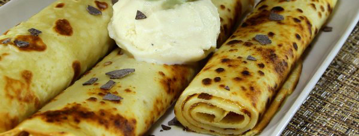

Рецепти
Класически палачинки
| Приготвяне | Готвене | Общо | Порции |
| 10 минути | 30 минути | 40 минути | 10 |
Необходими продукти
- 2 броя яйца
- около 2 чаши (400 мл) прясно мляко
- около 2 чаени чаши брашно
- щипка сол
- 2 - 3 супени лъжици олио
Начин на приготвяне
В дълбока купа разчупете яйцата. Разбийте със солта. Добавете с бъркане млякото. Постепенно добавете и брашното. Бъркайте до получаване на хомогенна смес. Добавете 1-2 супени лъжици олио.
Загрейте тигана за палачинки. При тефлонов тиган можете да не използвате мазнина. Поставете около един черпак от сместа и разлейте по цялата основа на тигана.
Оставете да се пържи до лекото отделяне на краищата на палачинката. Обърнете с помощта на дървена шпатулка. След като връхчетата зарозовеят и се повдигнат, палачинката е готова.
Гарнирайте по желание.
Добър апетит!